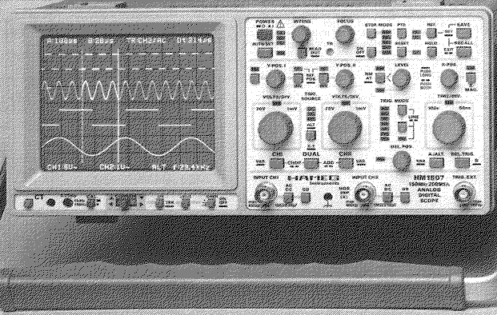

Previous
Next
TOC
In horizontaler Richtung ist die Ablenkung in den meisten Fällen
zeitlinear, das heißt der Leuchtpunkt bewegt sich mit konstanter
Geschwindigkeit von links nach rechts über den Bildschirm. In verti-
kaler Richtung wird der zeitabhängige Verlauf der zu betrachtenden
Eingangsspannung wiedergegeben. Er wird somit sicht- und auswertbar.
Mit hilfe der Triggerung welche die verstärkte Meßspannung aus dem
Horizontalteil (Sägezahnspannung des Ablenkgenerators in den meisten
Fällen) wird der Ablenkgenerator so angesteuert daß das Signal ruhig,
also stehend auf dem Bildschirm angezeigt wird. Hier das, bei diesen
Messungen verwendete Oszilloskop, vom Typ
Hameg HM 1507 (ausge-
rüstet mit den folgenden Fähigkeiten:
Die Abtastrate beträgt im Analogbetrieb 2 * 150MHz und im Digital-
betrieb mit bis zu 200 Megasamples pro Sekunde und einer Seriellen
Schnittstelle) Hinweiß: Bei diesem Gerät ist ab ca. 70MHz ein zuneh-
mender Meßfehler zu berücksichtigen. Bei ca. 110MHz beträgt der Ab-
fall etwa 10 Prozent, der tatsächliche Spannungswert ist dann ca. 11
Prozent größer (laut Herstellerangabe) als der angezeigte Wert.
Wegen den differierenden Bandbreiten der Vertikalverstärker (-3db im
Bereich von 150MHz bis 170MHz) ist der Meßfehler nicht exakt defi-
nierbar. Bei Geräten mit geringeren Bandbreiten ist der zunehmende
Meßfehler schon ab 10MHz da, generell sollte man ein Oszilloskop
verwenden welches mindestens das dreifache an Bandbreite kann wie
die zu messende Frequenz groß ist um diesen Meßfehler zu umgehen.

Handelsübliche Digitalmulitimeter tasten das Eingangssignal nur mit
einer Rate von 2 bis 3 Messungen pro Sekunde ab (TRUE RMS Geräte
messen zwar bis 10 Kilohertz, sind aber hier ebenfalls ungeeignet
weil die Frequenz bis zu 48MHz bei beschleunigten Falcon030 Computern
betragen kann), sind also für da hier besprochene Problem völlig
ungeeignet um das problem mit dem 16.042494MHz Takt zu beseitigen,
außerdem stellen die Digitalmultimeter ausschließlich die Amplitude
und nicht die Signalform der zu messenden Spannung beziehungsweise
Größe dar.
weiterblättern
Kapitel Der Clockpatch aus der ST-Computer Zeitschrift, Seite 7